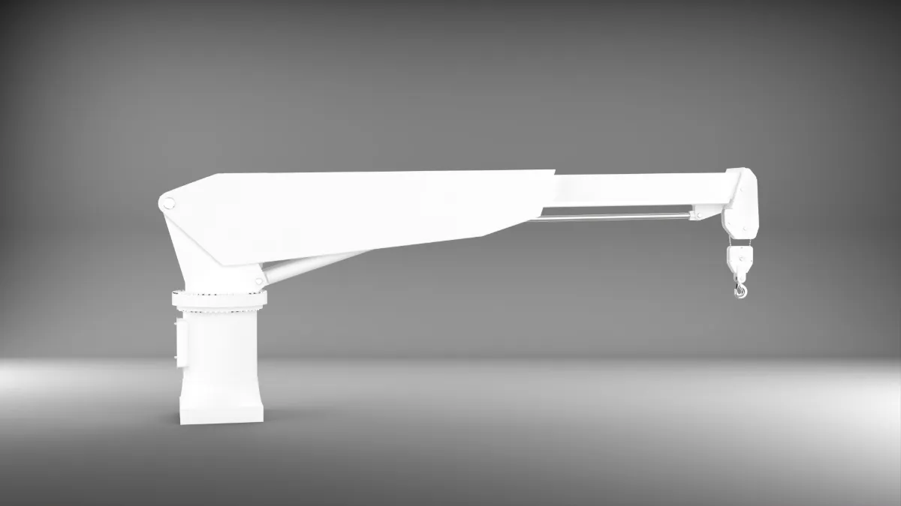
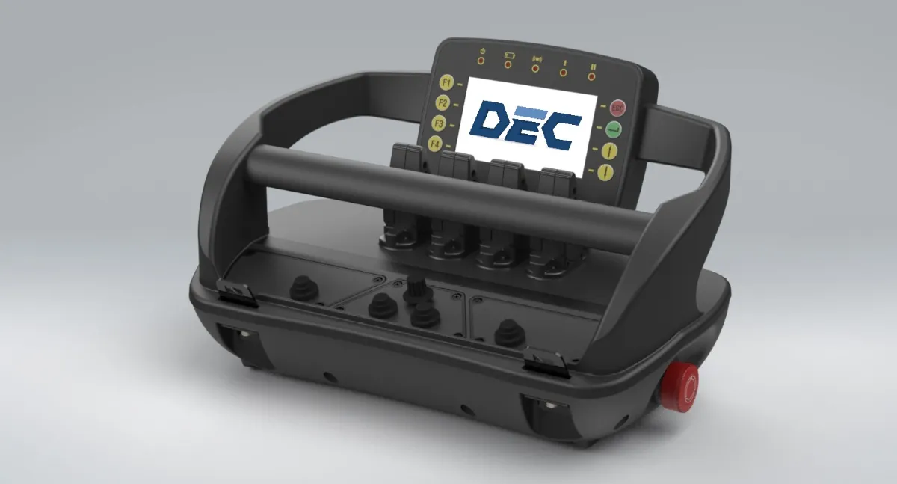

DEC CRANE TELESCOPIC BOOM CRANES
DEC Telescopic Boom Cranes are designed to provide maximum flexibility, extended reach, and high lifting capacity, making them ideal for offshore, marine, and wind industry applications. With a compact electro-hydraulic design, these cranes ensure smooth and efficient operation while maintaining high safety standards.
MARINE APPLICATIONS
DEC Telescopic Boom Cranes are highly valued in the marine industry for their robust design and high lifting capacity. They are commonly used for tasks such as loading and unloading supplies, containers, and equipment, and are suitable for service vessels, docks, and harbor environments.
Typical Marine Applications:
✔ Service Cranes
✔ Provision Cranes
✔ Container and Cargo Handling Cranes
OFFSHORE APPLICATIONS
For offshore environments, DEC Telescopic Boom Cranes are engineered to perform in harsh conditions, ensuring high-performance lifting and handling. These cranes can be customized according to customer requirements and are available with various certifications to meet international offshore standards.
Typical Offshore Applications:
✔ Shipboard Cranes – Installed on vessels for multi-purpose lifting tasks
✔ Ship-to-Ship Cranes – Designed for secure and efficient cargo transfer between vessels
✔ Provision Cranes – Used for lifting and handling supplies on offshore platforms
WIND INDUSTRY APPLICATIONS
DEC Telescopic Boom Cranes are extensively used in the wind industry to support offshore wind farms, particularly for unloading supply vessels and handling materials on Transition Pieces (TP) and offshore platforms. These cranes are customized to accommodate various sea states (SWH), ensuring reliable performance regardless of weather or sea conditions.
Typical Wind Industry Applications:
✔ Platform Cranes – Used on offshore wind platforms for a variety of lifting operations, including maintenance and material handling
✔ Substation Cranes – Deployed on offshore substations for handling equipment, tools, and materials

KEY FEATURES
✅ Electro-Hydraulic Drive System: Ensures smooth and efficient crane operation
✅ Designed for Extreme Environments: Suitable for both low and high-temperature conditions
✅ Integrated Hydraulic Power Unit (HPU): Compact and efficient system for optimal performance
✅ Safe Working Load (SWL): From 1T to 50T
✅ Max Outreach: From 3m up to 45m for extended reach operations
✅ Unlimited 360° Slewing: Provides full operational flexibility
✅ Fail-Safe Brakes: Installed on all crane movements for enhanced safety
✅ Operator Control Platform: Designed for easy operation and maximum safety
✅ Standard Pedestal Height: Ready for mounting and welding to the vessel’s main steel structure
✅ Stepless Speed Control: For precise movement in all crane motions, including hoisting and lowering
✅ Automatic Hook Stop:Top position safety feature to prevent overhoisting
✅ Emergency Hand Pump: For manual winch brake release and slewing gear operation in case of power failure
✅ Smooth and Precise Control: The crane controls ensure smooth and precise movements of all crane motions. Two motions can be performed simultaneously, but at reduced speeds for enhanced safety and control.
DEC Telescopic Boom Cranes are engineered to meet the highest standards of performance, safety, and durability, making them the perfect lifting solution for offshore, marine, and wind industry applications.

OPTIONAL FEATURES
🔹 Class Certification according to major international rules and regulations
🔹 Constant Tension System to maintain load stability during dynamic conditions
🔹 Overload Protection Systems:
• MOPS – Manual Overload Protection System
• AOPS – Automatic Overload Protection System
🔹 Lifting of Personnel (Man-Riding): Certified for specialized lifting operations
🔹 Automatic Hook Stop: Available for both top and bottom positions
🔹 Remote Control Options:Wired or wireless control for flexible operation
🔹 Increased Pedestal Height: Customizable for specific installation requirements
🔹 Limit Switches: For luffing, slewing, and hoisting operations
🔹 Electrical Slip Ring: Allows for connection of additional electronic equipment
🔹 Load Indicator: For real-time monitoring and enhanced safety
🔹 Enclosed Operator Cabin: Provides protection and comfort in harsh environments
🔹 Oil Cooler: Ensures optimal performance in hot climates
🔹 Stainless Steel Hydraulic Piping: Improves durability and corrosion resistance
🔹 AHC – Active Heave Compensation: For precise load control in dynamic conditions
🔹 ATEX Zone 1 and 2 Execution: Suitable for hazardous environments